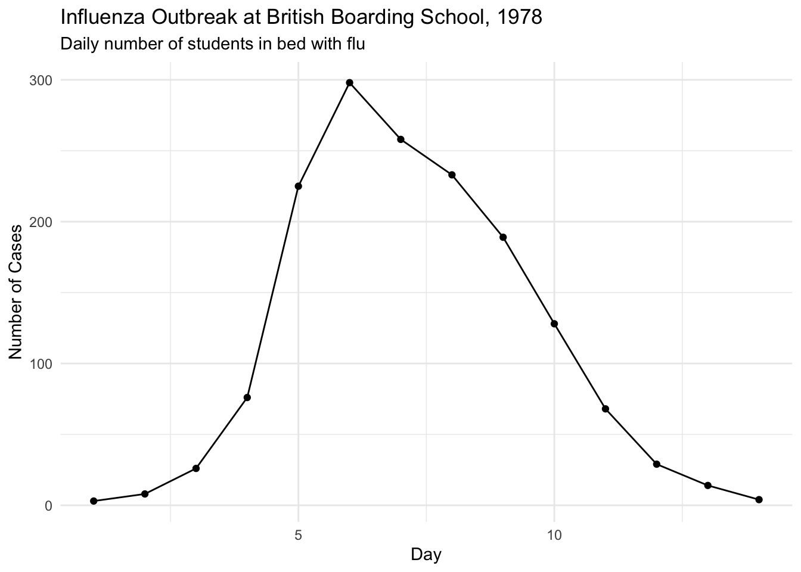
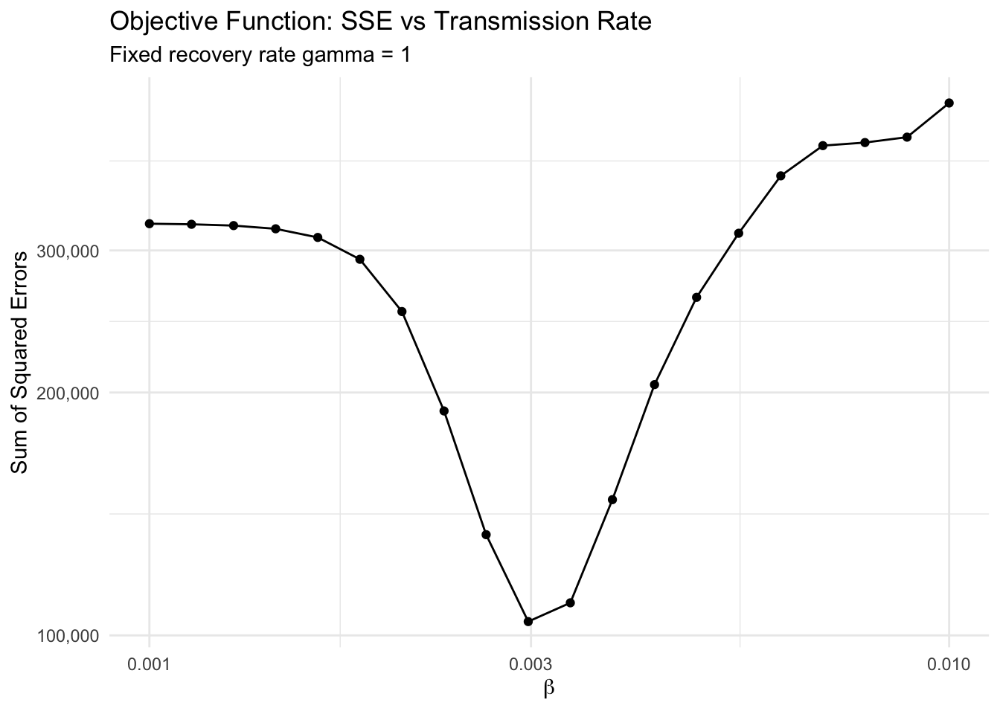
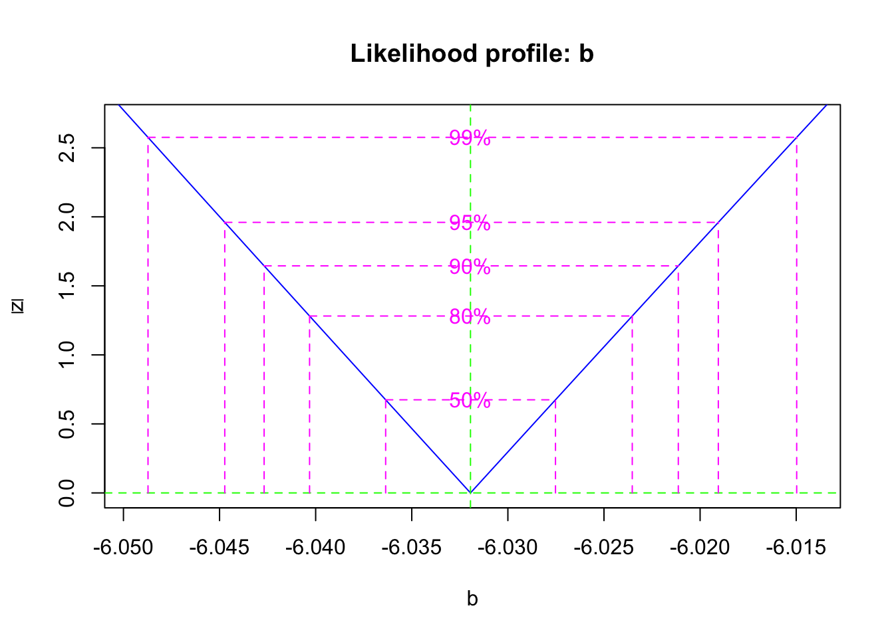
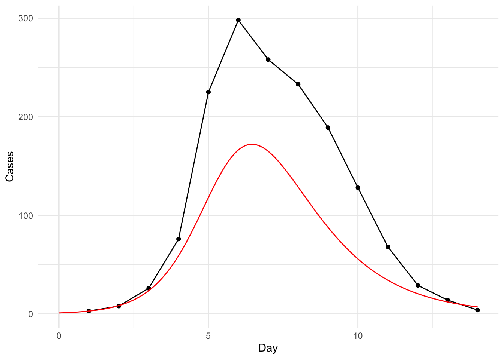
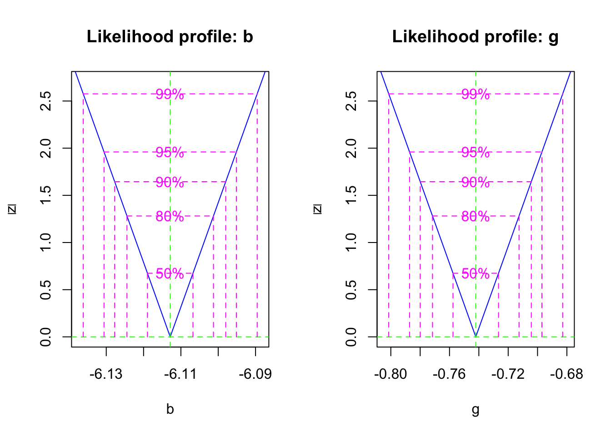
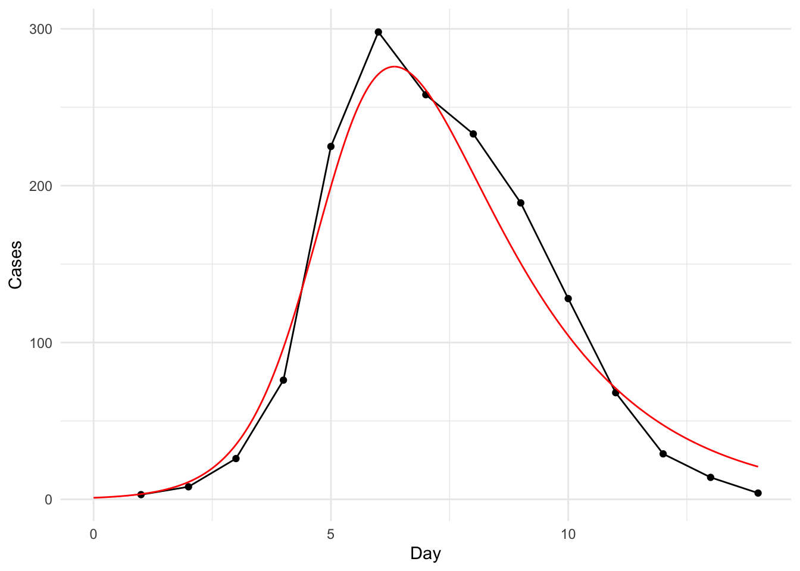

Basic calculus (understanding of derivatives and differential equations)
Required R packages:
Introduction
In this tutorial, we will fit a deterministic SIR model to data on an outbreak of flu in a British boarding school. The SIR model is one of the most fundamental models in mathematical epidemiology, describing how infectious diseases spread through a population.
The SIR Model: A Brief Overview
The SIR model divides a population into three compartments:
S (Susceptible): Individuals who can become infected
I (Infectious): Individuals who are currently infected and can transmit the disease
R (Recovered): Individuals who have recovered and are immune
The model is described by a system of ordinary differential equations:
\(\beta\) (beta) is the transmission rate: the rate at which susceptible individuals become infected per infected individual per unit time
\(\gamma\) (gamma) is the recovery rate: the rate at which infected individuals recover (inverse of the infectious period)
Key Epidemiological Quantities
From these parameters, we can derive important epidemiological quantities:
Basic reproduction number: \(R_0 = \frac{\beta}{\gamma}\) - the average number of secondary infections caused by one infected individual in a fully susceptible population
Effective reproduction number: \(R_t = R_0 \times \frac{S(t)}{N}\) - the reproduction number at time \(t\), accounting for the proportion of susceptibles
The Data: 1978 Influenza Outbreak
Our data comes from a 1978 influenza outbreak at a British boarding school with 763 students. The outbreak lasted 14 days, with cases recorded daily. This dataset is particularly valuable because:
The population is well-defined and closed (no births, deaths, or migration)
The outbreak was well-documented with daily case counts
The short duration makes it ideal for fitting simple epidemic models
# Load and prepare the dataflu <-read.csv("./data/influenza_england_1978_school.csv")flu <- flu %>%mutate(day =1:n(), # Create day variable (1 to 14)flu =as.numeric(in_bed) # Convert cases to numeric)# Visualize the outbreak dataggplot(data = flu, aes(x = day, y = flu)) +geom_line() +geom_point() +labs(x ="Day", y ="Number of Cases", title ="Influenza Outbreak at British Boarding School, 1978",subtitle ="Daily number of students in bed with flu") +theme_minimal()

Model Assumptions and Limitations
Before fitting the model, it’s important to understand the assumptions we’re making:
SIR Model Assumptions: - Homogeneous mixing: All individuals have equal probability of contact with each other - Constant population: No births, deaths, or migration during the outbreak - Perfect immunity: Recovered individuals cannot be reinfected - No latent period: Individuals become infectious immediately upon infection - Constant parameters: \(\beta\) and \(\gamma\) do not change over time
Data Assumptions: - Perfect reporting: All cases are observed and reported - Immediate detection: Cases are detected as soon as they become symptomatic - No asymptomatic cases: All infections result in observable symptoms
These assumptions may not hold perfectly in reality, but they provide a useful starting point for model fitting.
Fitting continuous-time models to data: trajectory matching with least squares
We start with one of the simplest approaches: least squares estimation. This method finds parameter values that minimize the sum of squared differences between observed data and model predictions.
Understanding Least Squares
What is least squares? Least squares assumes that the only source of variability is measurement error, which is:
Symmetrically distributed around the true value
Has constant variance (homoscedastic)
Is independent between observations
Under these assumptions, least squares provides:
Unbiased estimates of model parameters
Minimum variance among all unbiased estimators
Maximum likelihood estimates when errors are normally distributed
Why use least squares?
Getting initial values: Provides good starting points for more sophisticated methods
Discovering deviations: Residuals can reveal model inadequacies
Computational simplicity: Easy to implement and understand
Robustness: Works reasonably well even when assumptions are slightly violated
Defining the SIR Model
Let’s define the SIR model as a system of ordinary differential equations:
# Define the SIR model as a function for deSolvesir_model <-function(t, y, params) {with(as.list(c(y, params)), {# Rate of change of susceptible individuals dS <--beta * S * I# Rate of change of infectious individuals dI <- beta * S * I - gamma * I# Rate of change of recovered individuals dR <- gamma * I# Return the derivatives as a listlist(c(dS, dI, dR)) })}
Creating the Objective Function
Now we set up a function that calculates the sum of squared differences between the observations and the model predictions. This is our objective function that we want to minimize.
# Load the deSolve package for solving differential equationslibrary(deSolve)# Define the sum of squared errors functionsse_sir <-function(params0, data) {# Extract data and parameters dt <- data$day # Time points for simulation cases <- data$flu # Observed case counts beta <- params0[1] # Transmission rate parameter gamma <- params0[2] # Recovery rate parameter# Initial conditions (based on the boarding school population) S0 <-762# Initial number of susceptibles (total population - 1) I0 <-1# Initial number of infectious (index case) R0 <-0# Initial number of recovered init <-c(S = S0, I = I0, R = R0)# Simulate the SIR model using ode() out <-ode(y = init,times = dt,func = sir_model,parms =c(beta = beta, gamma = gamma),hmax =1/120# Maximum step size for numerical integration )# Convert output to data frame for easier manipulation out <-as.data.frame(out)# Calculate sum of squared errors between model predictions and observations sse <-sum((out$I - cases)^2)return(sse)}
Key points about this function:
Initial conditions: We assume 762 susceptibles, 1 infectious individual (the index case), and 0 recovered
Time points: We simulate the model at the same time points where we have observations
Numerical integration: The hmax = 1/120 parameter controls the step size for solving the differential equations
Objective function: We return the sum of squared errors, which we want to minimize
Exploring Parameter Space
Now, let’s see how this function works by exploring different parameter values.
To start, we’ll fix \(\gamma\) (the recovery rate) and explore different values of \(\beta\) (the transmission rate).
Why fix \(\gamma\) first? Individuals infected with flu typically are infectious for roughly 1 day prior to presenting with symptoms. In this case, we may suspect that sick individuals were immediately removed from interacting with susceptible individuals as soon as they were detected. Therefore, for current purposes we assume \(\gamma = 1\) (meaning the infectious period is 1 day).
Exploring the objective function:
We’ll create a grid of parameter values and evaluate our objective function at each point. This will help us understand:
The shape of the objective function
Where the minimum might be located
Whether there are multiple local minima
# Create a data frame to store parameter combinations and their SSE valuessse_example <-data.frame(beta =1*10^-seq(2, 3, length.out =20), # $\beta$ values from 0.01 to 0.001gamma =rep(1, 20), # Fixed $\gamma = 1$sse =NA# Initialize SSE column)# Evaluate SSE for each parameter combinationfor (i in1:nrow(sse_example)) { sse_example$sse[i] <-sse_sir(as.numeric(sse_example[i, 1:2]), data = flu)}# Plot the objective functionggplot(data = sse_example, aes(x = beta, y = sse)) +geom_line() +geom_point() +scale_x_log10() +scale_y_log10(labels = scales::label_comma()) +labs(x =expression(beta), y ="Sum of Squared Errors",title ="Objective Function: SSE vs Transmission Rate",subtitle ="Fixed recovery rate gamma = 1") +theme_minimal()

Interpreting the Results
From the plot, we can see that there is a clear minimum in the sum of squared errors, indicating that there is an optimal value of \(\beta\) that best fits our data.
Key observations:
The SSE decreases as \(\beta\) increases from very small values
There’s a clear minimum around \(\hat{\beta} \approx 0.003\)
The function is well-behaved (smooth, single minimum)
Limitations of this approach: 1. Imprecise location: The exact location of the minimum isn’t precisely determined from this grid search 2. Fixed \(\gamma\) assumption: Our estimate is only valid if \(\gamma = 1\) is correct, but this was just an approximation
Moving to Numerical Optimization
To solve these problems, we need to: 1. Fit both parameters simultaneously: Find the minimum of a 2D surface in (\(\beta\), \(\gamma\)) space 2. Use numerical optimization: Employ algorithms that can find precise minima
This process is called optimization, and R provides robust algorithms for this purpose. The optim() function uses the Nelder-Mead algorithm by default, which is well-suited for this type of problem.
Using the optim() Function
Let’s examine the optim() function and then use it to find the best fit parameters.
# Look at the help file for optim()?optim
Key arguments of optim():
par: Initial values for the parameters to be optimized
fn: The function to be minimized (our SSE function)
data: Additional data to pass to the function
method: The optimization algorithm to use (default is “Nelder-Mead”)
Why run optim() twice?
We run the optimization twice to ensure convergence to the global minimum:
First run: Uses our initial guess
Second run: Uses the result from the first run as the starting point
# Set initial parameter values ($\beta$, $\gamma$)params0 <-c(0.001, 0.5) # Initial guess: $\beta = 0.001$, $\gamma = 0.5$# First optimization runfit0 <-optim(params0, sse_sir, data = flu)print("First optimization result:")
[1] "First optimization result:"
print(fit0$par)
[1] 0.002580105 0.471936440
# Second optimization run using first result as starting pointfit1 <-optim(fit0$par, sse_sir, data = flu)print("Final optimization result:")
[1] "Final optimization result:"
print(fit1$par)
[1] 0.002579972 0.471932750
Visualizing the Fitted Model
Now let’s simulate the model with our best-fit parameters and compare it to the observed data.
# Create fine time grid for smooth model simulationdt <-seq(1, max(flu$day), by =0.05)# Simulate model with best fit parametersmodel_sim <-ode(y =c(S =762, I =1, R =0), # Initial conditionstimes = dt,func = sir_model,parms =c(beta = fit1$par[1], gamma = fit1$par[2]), # Best fit parametershmax =1/120)# Convert to data frame for plottingmodel_sim <-as.data.frame(model_sim)# Plot the fitted model against the dataggplot(data = flu, aes(x = day, y = flu)) +geom_line() +geom_point() +geom_line(data = model_sim, aes(x = time, y = I), color ="red", size =1) +labs(x ="Day", y ="Number of Cases",title ="SIR Model Fit to Influenza Data",subtitle =paste("$\\beta =$", round(fit1$par[1], 4), ", $\\gamma =$", round(fit1$par[2], 4))) +theme_minimal()
Model fit: The red line shows how well our fitted SIR model captures the observed epidemic curve
Limitations of Least Squares
While least squares is a useful starting point, it has several limitations:
Statistical limitations:
Arbitrary objective function: Why minimize squared errors rather than absolute errors or other measures?
No uncertainty quantification: We get point estimates but no confidence intervals or measures of parameter uncertainty
Assumption violations: Real data often don’t meet the assumptions of constant variance and normal errors
Practical limitations:
Parameter identifiability: Multiple parameter combinations may produce similar model fits
Sensitivity to outliers: A few extreme observations can strongly influence the fit
No probabilistic framework: Doesn’t provide a statistical framework for model comparison
When least squares is appropriate:
Getting initial parameter estimates for more sophisticated methods
Quick exploratory analysis
When measurement error is the primary source of variability
When computational simplicity is important
In the next section, we’ll explore maximum likelihood estimation, which addresses many of these limitations by providing a principled statistical framework.
Exercises: Least Squares Estimation
Exercise 1: Parameter Sensitivity Analysis
How do the fitted parameters change when you assume different numbers of initial infectious individuals? What does this tell you about the importance of knowing initial conditions?
Fix \(\gamma\) at different values (0.5, 1.0, 1.5) and refit \(\beta\). How does this affect the estimated transmission rate?
Try different initial parameter values for optim(). Do you always get the same solution? What does this tell you about the optimization routine?
Calculate residuals (observed - predicted) for the fitted model. Plot residuals vs. time. Are there any patterns that suggest model inadequacy?
Fit the model to log-transformed case counts. How does this change the parameter estimates? What are the trade-offs of this approach?
Fitting continuous-time models to data: trajectory matching with Maximum Likelihood
Maximum likelihood estimation (MLE) provides a more principled and robust approach to fitting models to data than least squares. It’s based on a probabilistic framework that allows us to quantify uncertainty and make statistical inferences.
Understanding Maximum Likelihood
What is maximum likelihood? Maximum likelihood finds the parameter values that make the observed data most probable under the assumed model. It’s based on the likelihood function:
\[L(\theta) = \prod_{i=1}^{n} f(y_i | \theta)\]
Where: - \(L(\theta)\) is the likelihood function - \(\theta\) represents the model parameters - \(f(y_i | \theta)\) is the probability density function for observation \(i\) - The product is over all \(n\) observations
Why use maximum likelihood?
Principled approach: Based on probability theory and statistical inference
Uncertainty quantification: Provides confidence intervals and standard errors
Model comparison: Enables formal statistical tests between models
Flexibility: Can incorporate different probability distributions for the data
Steps in Maximum Likelihood Estimation
Specify the probability distribution for the observations
Write the likelihood function as a function of model parameters
Take the log and negate to get the negative log-likelihood (easier to work with)
Minimize the negative log-likelihood using numerical optimization
Extract parameter estimates and their uncertainties
Choosing a Probability Distribution
For our epidemic data, we need to specify how the observed case counts are distributed around the model predictions. We’ll assume the observations follow a Poisson distribution, which is appropriate for count data.
Why Poisson distribution?
Count data: We’re observing discrete numbers of cases
Variance scaling: The variance increases with the mean (realistic for epidemic data)
Non-negative: Poisson only produces non-negative values
Simple: Has only one parameter (the mean)
Parameter transformation:
Since \(\beta\) and \(\gamma\) must be positive, we’ll use log-transformed parameters:
\(\beta = e^b\) where \(b\) can be any real number
\(\gamma = e^g\) where \(g\) can be any real number
This transformation helps numerical optimization algorithms work more effectively.
Note
The Poisson assumption means we’re modeling the observed case counts as: \[Y_i \sim \text{Poisson}(\lambda_i)\] where \(\lambda_i\) is the model prediction for time \(i\). This accounts for the natural variability in case reporting and the discrete nature of the data.
First, let’s write a function to simulate the model given some combination of parameters. This is the same function we used in the least squares approach.
sir_model <-function(t, x, params) {with(as.list(c(x, params)), { dS <--beta*S*I dI <- beta*S*I - gamma*I dR <- gamma*Ilist(c(dS, dI, dR)) })}
Now let’s write a function to return the negative log-likelihood of the data, given some combination of parameters. We will use the dpois function from the stats package to calculate the Poisson likelihood.
We can get an idea about the uncertainty and in particular obtain confidence intervals using the profile likelihood. In bbmle, we can do this using the profile function. The absVal = TRUE argument ensures that the plot is on the absolute scale.
p <-profile(fit)plot(p, absVal =TRUE)

How does this model look when plotted against the data?
library(deSolve)dt <-seq(0, max(flu$day), by =0.05)parms <-c(beta =unname(exp(coef(fit))), gamma =0.75)init <-c(S =762, I =1, R =0)# Simulate modelmod_pred <-ode(y = init,times = dt,func = sir_model,parms = parms,hmax =1/120)# Convert to data framemod_pred <-as.data.frame(mod_pred)# Plot the fitted model against the dataggplot(data = flu, aes(x = day, y = flu)) +geom_line() +geom_point() +geom_line(data = mod_pred, aes(x = time, y = I), color ="red") +labs(x ="Day", y ="Cases") +theme_minimal()

Recalling that we obtained our parameter \(b\) (and therefore the transmission rate \(\beta\)) assuming a particular value of \(\gamma\), we wonder now how good this assumption was. Indeed, it is not hard to extend our approach to estimate \(b\) and \(g\) simultaneously, as follows.
sir_model <-function(t, x, params) {with(as.list(c(x, params)), { dS <--beta*S*I dI <- beta*S*I - gamma*I dR <- gamma*Ilist(c(dS, dI, dR)) })}# Negative log-likelihood functionsir_nll <-function(b, g){ dt <-seq(0, 14) parms <-c(beta =exp(b), gamma =exp(g)) # Exponentiate to get $\beta$ and $\gamma$ init <-c(S =762, I =1, R =0)# Simulate model out <-ode(y = init,times = dt,func = sir_model,parms = parms )# Convert to data frame out <-as.data.frame(out)# Calculate negative log-likelihood. nll <--sum(dpois(x = flu$flu, lambda =tail(out$I, nrow(flu)), log =TRUE))}
As before, we pick some initial values and fit.
library(bbmle)params0 <-list(b =-6, g =-0.7)fit0 <-mle2(sir_nll, start = params0)fit0
Call:
mle2(minuslogl = sir_nll, start = params0)
Coefficients:
b g
-6.1128649 -0.7421043
Log-likelihood: -76.29
# Use previous fit as starting valuesfit <-mle2(sir_nll, start =as.list(coef(fit0)))fit
Call:
mle2(minuslogl = sir_nll, start = as.list(coef(fit0)))
Coefficients:
b g
-6.1128649 -0.7421043
Log-likelihood: -76.29
We can now visualise the likelihood profiles
p <-profile(fit)plot(p, absVal =TRUE)

Finally, we can plot the fitted model against the data.
dt <-seq(0, max(flu$day), by =0.05)parms <-c(beta =unname(exp(coef(fit)[1])), gamma =unname(exp(coef(fit)[2])))init <-c(S =762, I =1, R =0)# Simulate modelmod_pred <-ode(y = init,times = dt,func = sir_model,parms = parms)# Convert to data framemod_pred <-as.data.frame(mod_pred)# Plot the fitted model against the dataggplot(data = flu, aes(x = day, y = flu)) +geom_line() +geom_point() +geom_line(data = mod_pred, aes(x = time, y = I), color ="red") +labs(x ="Day", y ="Cases") +theme_minimal()

Practical Considerations and Troubleshooting
Common Issues and Solutions
Optimization convergence problems:
Issue: optim() or mle2() fails to converge
Solutions:
Try different initial values
Use different optimization methods
Check for parameter bounds or constraints
Verify the objective function is well-behaved
Parameter identifiability:
Issue: Multiple parameter combinations give similar fits
Solutions:
Use profile likelihood to assess parameter correlations
Consider fixing one parameter based on external information
Collect more data or different types of data
Model validation:
Residual analysis: Check if residuals show patterns
Goodness of fit: Compare AIC/BIC for different models
Sensitivity analysis: Test robustness to initial conditions
Sensitivity to Initial Conditions
The fitted parameters can be sensitive to assumptions about initial conditions. Let’s explore this:
# Test sensitivity to initial infectious individualstest_I0 <-function(I0_vals) { results <-data.frame(I0 = I0_vals, beta =NA, gamma =NA, sse =NA)for(i in1:length(I0_vals)) {# Modify the SSE function to use different I0 sse_sir_test <-function(params0, data, I0_val) { dt <- data$day cases <- data$flu beta <- params0[1] gamma <- params0[2] S0 <-763- I0_val # Adjust S0 to maintain total population init <-c(S = S0, I = I0_val, R =0) out <-ode(y = init, times = dt, func = sir_model,parms =c(beta = beta, gamma = gamma), hmax =1/120) out <-as.data.frame(out) sse <-sum((out$I - cases)^2)return(sse) }# Fit with different I0 fit_test <-optim(c(0.001, 0.5), sse_sir_test, data = flu, I0_val = I0_vals[i]) results[i, 2:4] <-c(fit_test$par, fit_test$value) }return(results)}# Test different initial infectious valuesI0_range <-c(1, 2, 3, 5, 10)sensitivity_results <-test_I0(I0_range)print(sensitivity_results)